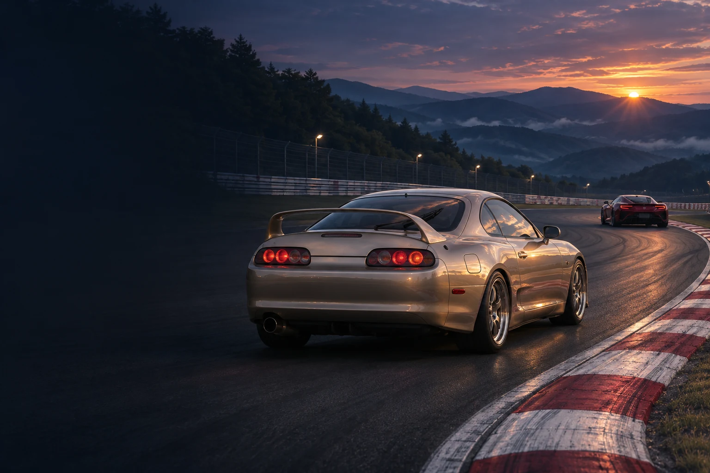
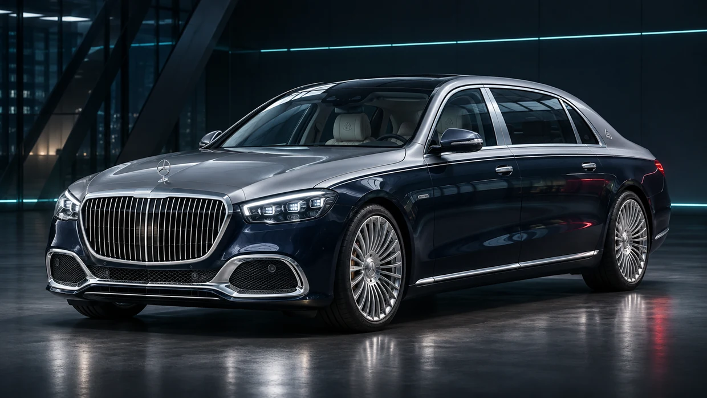
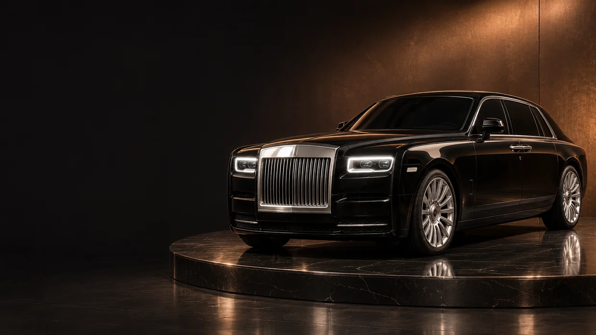

レース

ドリフト・コーナリング・高速走行で、走りながらZを獲得。制限時間なし。
コース・モードを選ぶ
コースを選ぶ
加速・制動・旋回などを走行データで比較できます。
完走で を追加獲得。ソロ全モード対応。
コースごとの追加Zを完走時に獲得できます。 報酬のしくみ
完走 1,000,000 Z。途中リタイアは走った距離に応じて報酬を獲得できます。
榛嶺峠は月夜の杉林、霧沢峠は濡れた舗装とトンネル、白峰峠は雪景色と渓谷橋を走ります。環月サーキットはスタート地点に戻る円形の1周コースです。百里耐久ハイウェイは全長100 kmの耐久コースです。
モードを選ぶ
峠バトル、タイムアタック、ドリフト、練習走行。
日替わり・週替わりミッション
公式戦
4台で競う級・段位戦。コースは毎レース自動抽選。
出走
運営車両の「性能MAX」は公式戦に適用されません。
現在の級・段位
10級0 pt
順位報酬
- 1位
- 25,000 Z ＋30 pt
- 2位
- 15,000 Z ＋18 pt
- 3位
- 7,000 Z ＋8 pt
- 4位
- 0 Z 0 pt
グランプリ
CPU7台と8連戦。総合ポイントで優勝し、大会ごとの称号を獲得できます。
大会一覧
所有車を選ぶ
所有車
外装・名前
ボディカラー
カラーコードで指定
車のニックネーム
メンテナンス
前回までの走行で生じた外装の損傷を部位ごとに修復できます。
-
ボディ
へこみや曲がった外板を修復
-
塗装
こすり傷や塗装剥がれを補修
-
ガラス・ライト
ひび割れたガラスやライトを交換
-
足回り
傷んだホイールと足回りを修復
タービン強化Lv.0 / 24
タービン
1 Lvにつき最高速度 +20 km/h、加速 +30ポイント。ソロ・フリールームで有効です。
- タービンの速度加算
- +0 km/h
- タービンの加速加算
- +0 pt
- ソロ時の公称最高速度
- —
ニトロレベルLv.0 / 15
選択中の車両
1 Lvごとに、ニトロ噴射中の最高速度が25 km/h上がります。所有車ごとにLv.15まで強化できます。
- 噴射中の最高速度加算
- +0 km/h
チューニング
運営車両
運営車両専用のソロ試走設定です。強化上限の性能を一時適用します。試走の報酬・記録は保存されません。


塗装屋
所有車の色を選び、3Dで確認してから保存できます。
ショップ
購入前に3Dプレビューと性能を確認できます。
記録・対戦
フリールーム、自己ベスト、セーブ同期。
フレンドと対戦
フレンドと対戦
プレイヤーレベル・自己記録
自己記録
この端末に保存されたコース別のベスト
完走するとこの端末にベスト記録が保存されます。
リンク対戦の順位表
セーブデータ同期
設定
音量・画質・操作をプレイ環境に合わせます。
BGM
BGM
レースBGM · 127曲
再生ボタンで試聴できます。曲名を選ぶと次のレースに反映されます。
操作ガイド
操作ガイド
レースを始める
走行中の操作
スマホ
- ハンドル
- ◀ ▶
- アクセル
- GAS
- ブレーキ・後退
- BRAKE
- ハンドブレーキ
- DRIFT
- MT シフト（下／上）
- − / ＋
- ニトロ
- NITRO を長押し
- カメラ切替
- 画面上部
- コース復帰
- 画面上部
- 一時停止
- 画面上部
キーボード
- ハンドル
- A D または ← →
- アクセル
- W または ↑
- ブレーキ・後退
- S または ↓
- ハンドブレーキ
- Space
- MT シフト（下／上）
- Q / E
- ニトロ
- アクセル＋Shift
- カメラ切替
- C
- コース復帰
- R
- 一時停止
- Esc
ゲームパッド
- ハンドル
- 左スティック／十字キー
- アクセル
- RT / R2
- ブレーキ・後退
- LT / L2
- ハンドブレーキ
- 下フェイスボタン
- MT シフト（下／上）
- LB / RB・L1 / R1
- ニトロ
- アクセル＋右フェイスボタン
- カメラ切替
- 上フェイスボタン
- コース復帰
- 左フェイスボタン
- 一時停止
- メニューボタン
ニトロはレースごとに満タンになります。ガレージで強化すると使用時間が延びます。
ゲームパッドは標準の割り当てを掲載しています。スティックを少し倒すと進路を微調整できます。